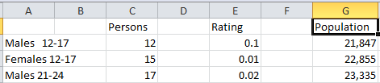
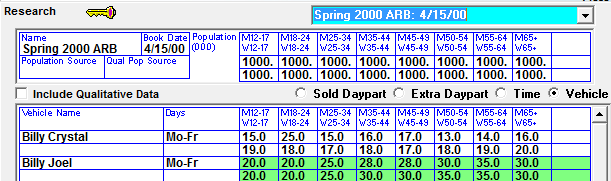
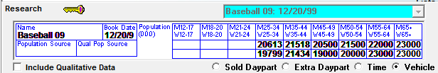
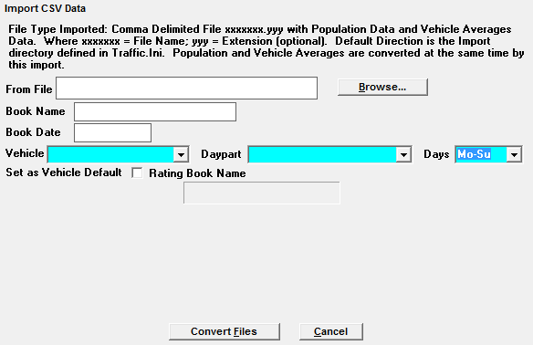
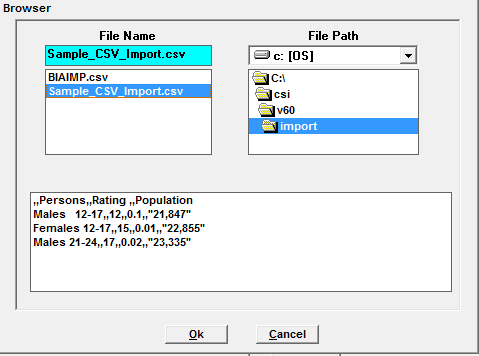
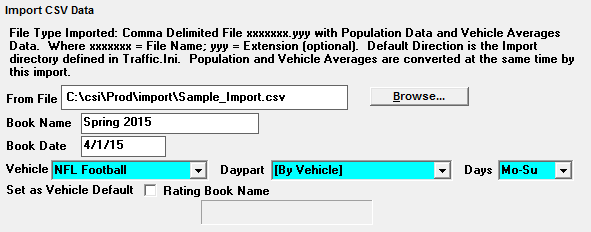
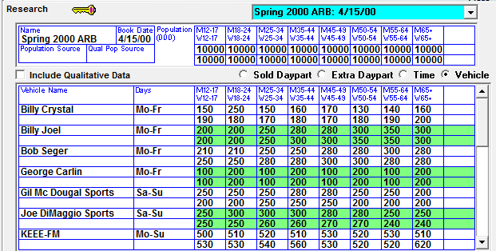

CSV Import
Counterpoint can import research data in CSV format using the structure described below.
File Structure
During the import process, the CSV file is checked for key words separated by commas, which are used to extract the research data from the file and place it into the correct fields in Counterpoint. Each column and header must be entered as described below.

A separate CSV file must be created for each vehicle in the system.
Demographic
Demographic categories must be entered in the first column and begin on the second line. They must obey the following structure:
- Column A
- Line 1- Blank
- Line 2- Males 12-17
- Line 3- Females 12-17
- Line 4- Persons 12+
- Line 5- Etc.
This is where the information will appear in Counterpoint:

Header Key Words
The import program searches for key words on specific columns in the file. When found, it imports information, and places it in the correct place based on the key words.
Persons
The first key word is Persons. Persons must be in the third column and must be on the same line as Population (described below). This is where you enter the AQH information.
- Column C (third Column)
- Line 1- Persons
This is where the information will appear in Counterpoint:
Population
The next crucial key word is Population, which must appear in the seventh column (Column G). Enter all population information under the Population header.
- Column G (Seventh Column)
- Line 1- Population
This is where the information will appear in Counterpoint:

Importing the File
To import the file, double click the Import Research shortcut, enter your Counterpoint credentials, and select CSV, or click Task -> Import -> Research -> CSV.
This brings up the CSV Import Screen:

Click “Browse” and select your file, and its information will be displayed. The system will default to the CSI\Prod\Import folder, browse to a different location if necessary. Click OK.

Import Screen

Enter the Book Name and Date, and select the Vehicle to which to attach the research. The Daypart will default to By Vehicle, and the Days will populate as well.
Check "Set as vehicle default" to set this book as the default research book for the selected vehicle.
Click the Convert Files button.
Verification
The research will appear in Lists -> Research for verification.
